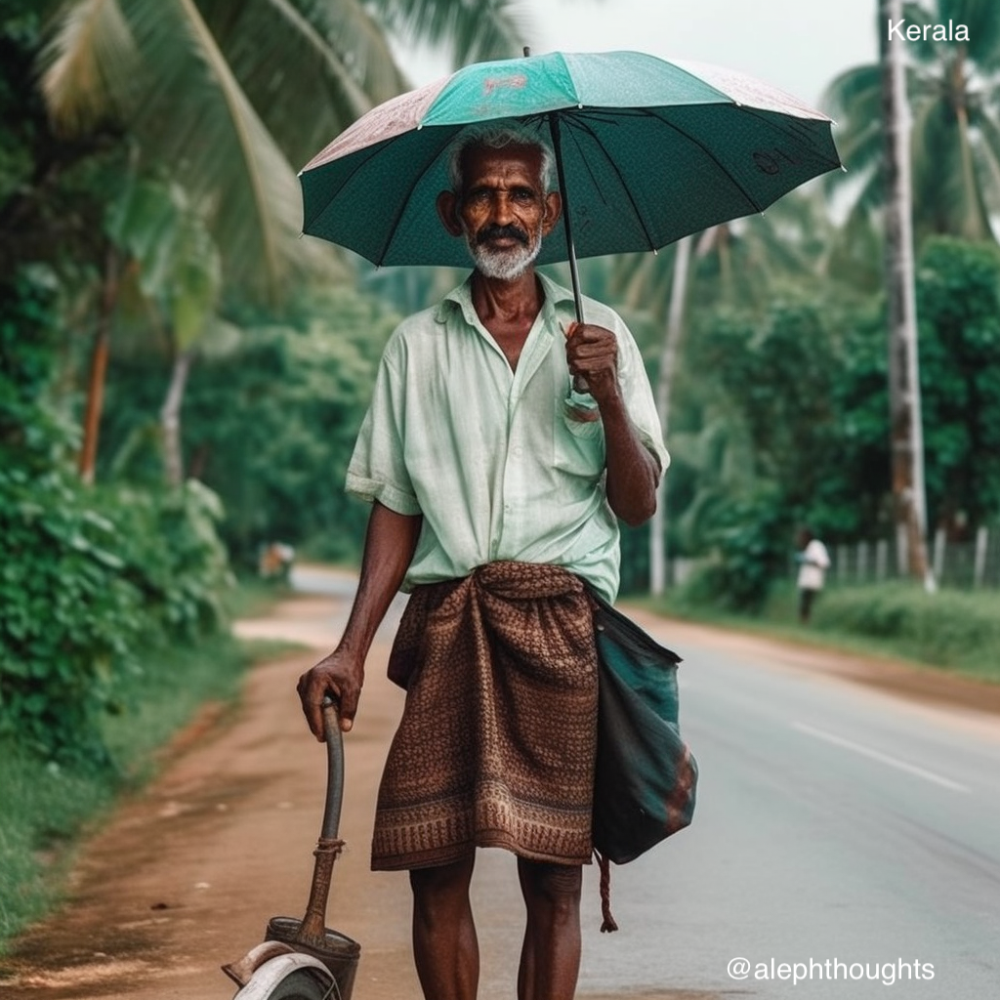

India is well-known for its cultural, linguistic, racial, and geographical variety. It has one of the world’s fastest-growing economies and is a force to be reckoned with. Nonetheless, the western media and the western world have a perception of the country that persists to this day in their news, movies, and media coverage. This bias creeps into the data sets used in many AI applications. Most AI tools are either ineffective in the Indian context or heavily biassed towards a particular perception. I created the following photographs with midjourney as a little fun project over the weekend. I instructed it to create an image of the most stereotypical individual in Indian States. Midjourney AI excels in creating realistic people portraits. It produced some extremely stunning photographs. If you find any of the photos offensive, please understand that this is a result of the underlying datasets, not of midjourney’s or my perspective. I hope you can appreciate the technology and, if you still feel compelled to act, create more representative data on India and its people, by clicking and drawing pictures, writing etc.
Andhra Pradesh
Arunachal Pradesh
Assam
Bihar

Chhattisgarh
Goa
Gujarat
Haryana
Himachal Pradesh
Jammu and Kashmir
Jharkhand
Karnataka
Kerala

Madhya Pradesh
Maharashtra

Manipur
Meghalaya
Mizoram
Nagaland
NCT of Delhi

Odisha
Punjab
Rajasthan
Sikkim
Tamil Nadu
Telangana
Tripura
Uttar Pradesh
Uttarakhand
West Bengal